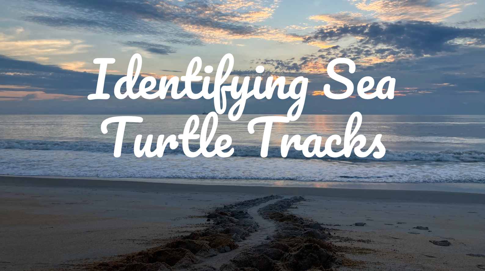
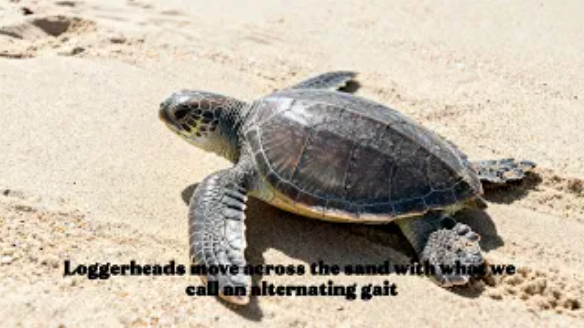

Academic Project · Multimedia Production
Educational Video
For this project, I created an instructional video using two different production approaches: traditional video editing and AI-assisted video generation. Both versions were required to communicate an educational topic through a sequence of high-resolution images, camera movement, transitions, visual effects, captions, narration, background music, and formal title and credit sections. The traditional version was created with video-editing software, while the AI version used generative tools to assist with the production process.

Traditional Video Production
For the traditionally created video, I had to plan out what my topic would be based on the quality of photos I could get. My other projects have had a general theme of accessibility, but those photos probably would have been difficult to find, decide on, or incorporate into my educational video. Instead, I went with an educational video about my favorite volunteer activity in the world, turtle patrol.
I first looked through my camera roll to decide what types of photos to include, and I ended up with a lot more sunrise photos than I could conceivably use for an educational video about turtles, but there were plenty of photos of turtle tracks as well, so I chose the tracks as the topic for my video. Then I wrote the original script, which I thought would be about 2 minutes, but when I recorded it, it came out to more than 4 minutes. I had to cut out the interactive quiz questions and everything about leatherback turtles as well just to get it under 2 minutes.
I used Clipchamp to make my video, starting with my scripted narration as the base. Then I picked what photos I wanted to use and placed them at certain points within the video. I had to do a second pass and find more photos because I didn’t have any of Greens or Loggerheads swimming, so I sourced those online, but the vast majority of the photos and videos are ones I took myself; you can even see my sister in some of them.
Once I had my photos placed correctly in sync with the narration, I added the transitions (“fade to white” for title cards and “swipe up” for all others), the title card text/captions, and the background music, all using free resources inside Clipchamp. I went through it all together and tweaked some of the timing on the transitions and swapped a photo or two and then saved it as an mp4 and uploaded it to YouTube as a public link.

AI-Assisted Video Production
For the AI version, it took a long time to find something that would generate a video and not require me to pay upfront or get a subscription. When I finally found something, Artlist, the results were less than stellar, but pretty funny.
Reflection: Traditional and AI Video Production
The similar aspects between traditional and AI generated educational videos were the need for the scripted narration, sourcing the high-definition images, and adding background music, transitions, and written text to the screen. For my traditionally developed video, it took me significantly longer and I had to go through several revisions to cut out extra content because my first script recorded more than 4 minutes of me speaking. I also had more fun finding good photos for the traditional version because I could pull them from my phone’s library, and I had more control over all the little details that went into making the video.
The AI version was more frustrating initially but ended up being a lot faster to produce. However, it also didn’t match my vision for what I wanted the video to be like, and I had less control over the process and the final output than I would have liked.
I feel like I definitely learned more skills through the traditional approach, and I also got to reinforce my own knowledge and experience in the subject. I’d never used Clipchamp before, or really any video editing software that wasn’t part of my camera app, so it was a new experience for me and I learned a lot. Clipchamp was actually a lot easier to use and more intuitive than I initially thought, and by the time I was halfway through, I was having fun playing with the different transition effects and background music options. I didn’t really learn any new skills like that for the AI approach.